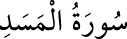

111- MESED SÛRESİ
Tebbet, «kurusun» mânâsına bedduâdır. Ebû Leheb hakkında inmiştir. Zîrâ o,
eziyet etmek kasdıyla Rasûlullah (s.a.)’in yoluna gizlice diken koymuş, bu işte
kendisine karısı da yardım etmişti. Sûre, “Mesed sûresi” diye de bilinir. Fâtiha
sûresinden sonra Mekke’de inmiştir, beş âyettir.
Bir rivâyete göre Şuarâ sûresinin 124. âyeti emrince Allah Rasûlü (s.a.) yakın
akrabasını çağırarak, onları İslâm’a dâvet etmişti. Amcası Ebû Leheb galiz sözler
sarfederek, «Bizi bunun için mi çağırdın?» demişti. Bunun üzerine bu sûre nâzil
oldu.